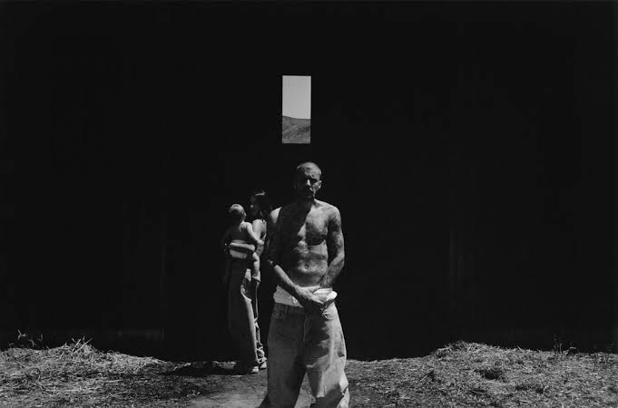
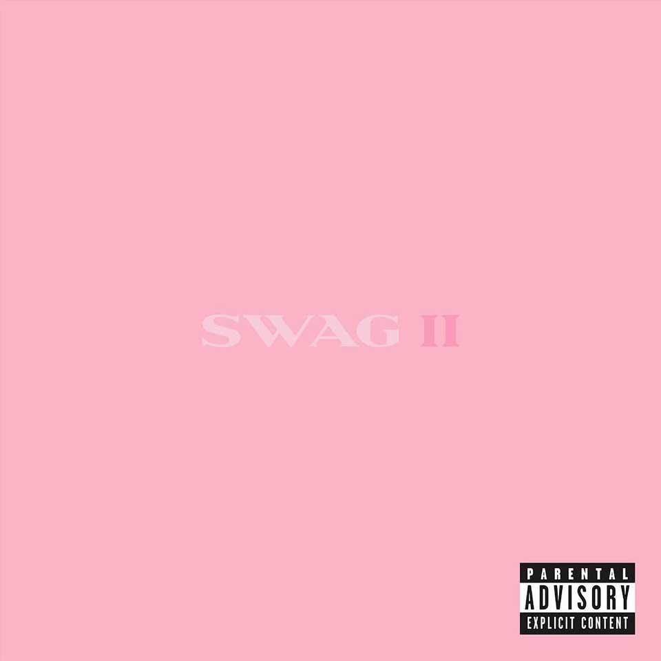

(2009) [FOTO ERA 1] [ ERA MY WORLD ]

El inicio del fenómeno. Flequillo y color morado. Éxito: "Baby".

Nacido en London, Ontario, Canadá, un pequeño niño comenzó a subir videos caseros a YouTube cantando con un talento innato. En 2008, su destino cambió para siempre cuando Scooter Braun descubrió sus videos de forma accidental, abriéndole las puertas a una audición con Usher y al inicio del fenómeno fan más grande del siglo.
[Foto de perfil: Una imagen de Justin de frente, nítida y de alta calidad]
-imagenes de los albumes
(2009) [FOTO ERA 1] [ ERA MY WORLD ]
El inicio del fenómeno. Flequillo y color morado. Éxito: "Baby".
[ ERA PURPOSE ] [FOTO ERAS 4] (2015)

El pico global. Cabello platinado.
(2025)[FOTO ERAS][ERA SWAG]

"El regreso a la palabra que lo definió. Justin cierra el círculo con un proyecto independiente y experimental, cambiando las reglas del pop comercial por la autenticidad y la crudeza musical."


